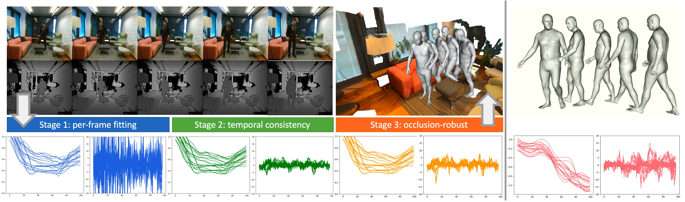

Abstract
Recovering high-quality 3D human motion in complex scenes from monocular videos is important for many applications, ranging from AR/VR to robotics. However, capturing realistic human-scene interactions, while dealing with occlusions and partial views, is challenging; current approaches are still far from achieving compelling results. We address this problem by proposing LEMO: LEarning human MOtion priors for 4D human body capture. By leveraging the large-scale motion capture dataset AMASS, we introduce a novel motion smoothness prior, which strongly reduces the jitters exhibited by poses recovered over a sequence. Furthermore, to handle contacts and occlusions occurring frequently in body-scene interactions, we design a contact friction term and a contact-aware motion infiller obtained via per-instance self-supervised training. To prove the effectiveness of the proposed motion priors, we combine them into a novel pipeline for 4D human body capture in 3D scenes. With our pipeline, we demonstrate high-quality 4D human body capture, reconstructing smooth motions and physically plausible body-scene interactions.
Multi-stage Pipeline Overview

Provided a scene mesh and an RGBD sequence with body occlusion, our method recovers a realistic global motion, with natural person-scene interactions. The markers trajectories (left) and accelerations (right) of each stage are shown at the bottom, as well as a walking sequence from AMASS (pink). Note that the results from Stage 1 show large and unrealistic motion accelerations (blue). The recovered motion (green) in Stage 2 is significantly smoother. However, it also loses the realistic accelerations (peaks in the acceleration plot) that can happen when the body interacts with the scene (e.g. foot-to-ground contact during walking). Our recovered motion from Stage 3 (orange) is similar to the high-quality AMASS motion w.r.t. both the trajectory smoothness and the acceleration patterns.
Video
More Visualization Results
Citation
Learning Motion Priors for 4D Human Body Capture in 3D Scenes
Siwei Zhang, Yan Zhang, Federica Bogo, Marc Pollefeys, Siyu Tang
In Proceedings of the International Conference on Computer Vision, 2021
@inproceedings{zhang2021learning,
title={Learning motion priors for 4d human body capture in 3d scenes},
author={Zhang, Siwei and Zhang, Yan and Bogo, Federica and Pollefeys, Marc and Tang, Siyu},
booktitle={Proceedings of the IEEE/CVF International Conference on Computer Vision},
pages={11343--11353},
year={2021}
}
Team
 |
 |
 |
 |
 |
|---|---|---|---|---|
| Siwei Zhang | Yan Zhang | Federica Bogo | Marc Pollefeys | Siyu Tang |